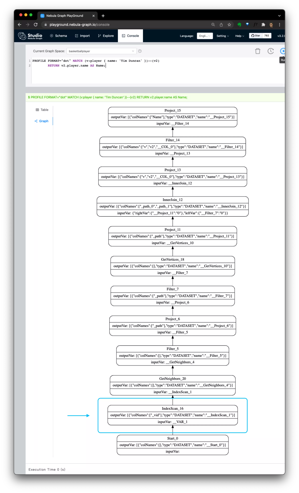
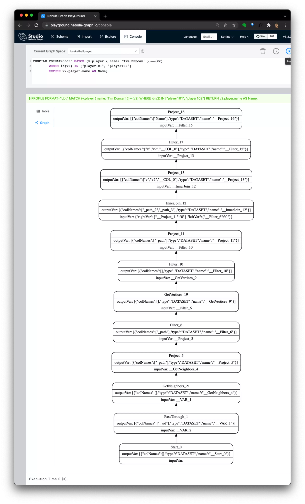

Nebula Graph 索引详解

index not found？找不到索引？为什么我要创建 Nebula Graph 索引？什么时候要用到 Nebula Graph 原生索引，一文把这些搞清楚。
Nebula Graph 的索引其实和传统的关系型数据库中的索引很像，但是又有一些容易让人疑惑的区别。刚开始了解 Nebula 的同学会疑惑于：
- 不清楚 Nebula Graph 图数据库中的索引到的是什么概念
- 我应该什么时候使用 Nebula Graph 索引
- Nebula Graph 索引怎么影响到写入性能
这篇文章里，我们就把这些问题回答好。
1 到底 Nebula Graph 索引是什么
简而言之，Nebula Graph 索引是用来，且只用来针对纯属性条件出发查询场景的
- 图游走（walk）查询中的属性条件过滤不需要它
- 纯属性条件出发查询（注：非采样情况）必须创建索引
1.1 纯属性条件出发查询
我们知道在传统关系型数据库中，索引是对表数据的一个或多个针对特定列重排序的副本，它用来加速特定列过滤条件的读查询并带来了额外的数据写入（加速而非这样查询的必须前提）。
在 Nebula Graph 图数据库里，索引则是对点、边特定属性数据重排序的副本，用来提供纯属性条件出发查询（如下边的查询：从只给定了点边属性条件，而非点的 ID 出发去获取图数据）
|
|
上边这两个纯属性条件出发查询就是字面意思的”根据给定的属性条件获取点或者边本身“ ，反面的例子则是给定了点的 ID：
|
|
我们仔细看前边的 query 1 和 query 3，尽管语句中条件都有针对 tag 为 player 的过滤： { name: 'Tim Duncan' } ：
-
query 3之中不需要索引，因为它可以：- 更直接的从已知的
v2顶点：["player101", "player102"] - 向外扩展、游走（GetNeighbors() 获得边的另一端的点，然后GetVertices() 得到下一跳的
v），根据 v.player.name 过滤掉不要的数据
- 更直接的从已知的
-
query 1则不同，它因为没有任何给定的顶点 ID：- 只能从属性条件入手，
{ name: 'Tim Duncan' }，在按照 name 排序了的索引数据中先找到符合的点：IndexScan() 得到v - 然后再从
v做 GetNeighbors() 获得边的另一端 的v2，在通过 GetVertices() 去获得下一跳v2中的数据
- 只能从属性条件入手，
其实，这里的关键就是在于是查询是否存在给定的顶点 ID（Vertex ID），下边两个查询的执行计划里更清晰地比较了他们的区别：
query 1, 需要基于索引，纯属性条件出发查询 |
query 3, 从已知 VID，不需要索引 |
|---|---|
|  |  |
1.2 为什么纯属性条件出发查询里必须要索引呢？
因为 Nebula Graph 在存储数据的时候，它的结构是面向分布式与关联关系设计的，类似表结构数据库中无索引的全扫描条件搜索实际上更加昂贵，所以设计上被有意禁止了。
注: 如果不追求全部数据，只要采样一部分，3.0 里之后是支持不强制索引 LIMIT
的情况的，如下查询（有 LIMIT）不需要索引：
1 2 3 4# sample vertex MATCH (v:team) RETURN v LIMIT 3 # or sample edge MATCH ()-[e:follow]->() RETURN e LIMIT 3
1.3 为什么只有纯属性条件出发查询
我们比较一下正常的图查询 graph-queries 和纯属性条件出发查询 pure-prop-condition queries：
- graph-queries： 如
query 2、query 3是沿着边一路找到特定路径条件的扩展游走 - pure-prop-condition queries：如
query 0andquery 1是只通过一定属性条件（或者是无限制条件）找到满足的点、边
而在 Nebula Graph 里，graph-queries 在扩展的时候，图的原始数据已经按照 VID（点和边都是）排序过了（或者说在数据里已经索引过了），这个排序带来连续存储（物理上临接）使得扩展游走本身就是优化、很快的。
1.4 总结：索引是什么，索引不是什么？
索引是什么？
- Nebula Graph 索引是为了从给定属性条件查点、边的一份属性数据的排序，它用写入的代价是的这种读查询模式成为可能。
索引不是什么？
- Nebula Graph 索引不是用来加速一般图查询的：从一个点开始向外拓展的查询（即使是过滤属性条件的）不会依赖原生索引，因为 Nebula 数据自身的存储就是面向这种查询优化、排序的。
2 一些 Nebula Graph 索引的设计细节
为了更好理解索引的限制、代价、能力，咱们来解释更多他的细节
-
Nebula Graph 索引是在本地（不是分开、中心化）和点数据被一起存储、分片的。
-
它只支持左匹配
- 因为底层是 RocksDB Prefix Scan
-
性能代价:
- 写入时候的路径：不只是多一分数据，为了保证一致性，还有昂贵的读操作
- 读路径：基于规则的优化选择索引，Fan Out 到所有 StorageD
这些信息也在我的手绘图和视频里可以看到：

因为左匹配的设计，在有更复杂的针对纯属性条件出发查询里涉及到通配、REGEXP这样的全文搜索情况，Nebula Graph 提供了全文索引的功能，它是利用 Raft Listener 去异步将数据写到外部 Elasticsearch 集群之中，并在查询的时候去查 ES 去做到的，见文档。
在这个手绘图中，我们还可以看出
- Write path
- 写入索引数据是同步操作的
- Read path
- 这部分画了一个 RBO 的例子，查询里的规则假设 col2 相等匹配排在左边的情况下，性能优于 col1 的大小比较匹配，所以选择了第二个索引
- 选好了索引之后，扫描索引的请求被 fan out 到存储节点上，这其中有些过滤条件比如 top n 是可以下推的
结论：
- 因为写入的代价，只有必须用索引的时候采用，如果采样查询能满足读的要求，可以不创建索引而用 LIMIT
。 - 索引有左匹配的限制
- 符合查询的顺序要仔细设计
- 有时候需要使用全文索引 full-text index。
3 索引的使用
具体要参考索引文档一些要点是：
-
在 tag 或者 edge type 上针对想要被条件反查点边的属性创建索引
CREATE INDEX
-
创建索引之后的索引部分数据会同步写入，但是如果创建索引之前已经有的点边数据对应的索引是需要明确指定去创建的，这是一个异步的 job：
REBUILD INDEX
-
触发了异步的
REBUILD INDEX之后，可以查询状态：SHOW INDEX STATUS
-
利用到索引的查询可以是 LOOKUP，并且常常可以借助管道符在此之上做拓展查询（Graph Query）：
1 2 3 4 5LOOKUP ON player \ WHERE player.name == "Kobe Bryant"\ YIELD id(vertex) AS VertexID, properties(vertex).name AS name |\ GO FROM $-.VertexID OVER serve \ YIELD $-.name, properties(edge).start_year, properties(edge).end_year, properties($$).name; -
也可以是 MATCH ，这里边
v是通过索引得到的，而v2则是在数据（非索引）部分拓展查询获得的。1 2MATCH (v:player{name:"Tim Duncan"})--(v2:player) \ RETURN v2.player.name AS Name; -
复合索引的能力与限制
理解原生索引的匹配是左匹配能让我们知道对于超过一个属性的索引：复合索引，并且能帮助我们理解它的能力有限制，这里说几个结论：
- 我们创建针对多个属性的复合索引是顺序有关的
- 比如，我们创建一个双属性复合索引 index_a:
(isRisky: bool, age: int)，和 index_b:(age: int, isRisky: bool)在根据WHERE n.user.isRisky == true AND n.user.age > 18这个条件查询时候，index_a 因为左匹配一个相等的短字段，显然效率更高。
- 比如，我们创建一个双属性复合索引 index_a:
- 只有复合左匹配的被复合索引的属性真子集的过滤条件才能被只支持
- 比如，index_a:
(isRisky: bool, age: int)，和 index_b:(age: int, isRisky: bool)在查询WHERE n.user.age > 18这个语句的时候, 只有 index_b 复合最左匹配，能满足这个查询。
- 比如，index_a:
- 针对一些从属性作为查询的起点，找点、边的情况，原生索引是不能满足全文搜索的匹配场景的，这时候，我们应该考虑使用 Nebula 全文索引，它是 Nebula 社区支持的开箱即用的外置 Elastic Search，通过配置，创建了全文索引的数据会通过 Raft listener 异步更新到 Elastic 集群中，他的查询入口也是
LOOKUP，详细的信息请参考文档。
- 我们创建针对多个属性的复合索引是顺序有关的
4 回顾
- Nebula Graph 索引在只提供属性条件情况下通过对属性的排序副本扫描查点、边
- Nebula Graph 索引不是用来图拓展查询的
- Nebula Graph 索引是左匹配，不是用来做模糊全文搜索的
- Nebula Graph 索引在写入时候有性能代价
- 记得如果创建 Nebula Graph 索引之前已经有相应点边上的数据，要重建索引
Happy Graphing!
Feture image credit to Alina